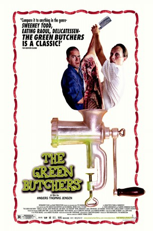

#6578 Dänische Delikatessen
 
 IMDB-Wertung: 7.3 / 10
IMDB-Wertung: 7.3 / 10  Metascore: 0
Metascore: 0 
Svend and Bjarne work for a butcher in a small Danish town. Fed up with their boss' arrogance, they decide to start their own butcher shop. After dismal beginnings, an unfortunate accident happens which coincides with a large order of meat. One hasty decision leads to another and soon the business thrives. In the meantime, Bjarne has to deal with his twin brother who has been in coma for years following a gruesome car accident.
Jahr: 2003
Dauer: 100 Minuten
FSK: 16
Land: Dänemark Studio: EuroVideoTonspuren:
Untertitel: Deutsch,
Auflösung: 1080p (1920x816) Größe: 7823 MB
Genre: Drama, Komödie
Regisseur: Anders Thomas Jensen
Drehbuch: Anders Thomas Jensen
Soundtrack:
Darsteller:
 Nikolaj Lie Kaas als Bjarne / Eigil
Nikolaj Lie Kaas als Bjarne / Eigil Mads Mikkelsen als Svend
Mads Mikkelsen als Svend Nicolas Bro als Hus Hans
Nicolas Bro als Hus Hans- Jakob Cedergren als Levnedsmiddelkontrollen
- Line Kruse als Astrid
- Ole Thestrup als Holger
- Bodil Jørgensen als Tina
- Aksel Erhardtsen als Pastor Villumsen
- Lily Weiding als Fru Juhl
- Camilla Bendix als Beate
- Elsebeth Steentoft als Ingrid Grith
- Kjeld Nørgaard als Leif Larsen
- Peter Reichhardt als Levnedsmiddelkontrollen
- Kristian Halken als Levnedsmiddelkontrollen
- Lars Ranthe als Levnedsmiddelkontrollen
- Mikkel Vadsholt als Elektriker
- Søren Thomsen als Læge
- Mia Lyhne als Journalist
- André Lundemann als Kunde
- Jeppe Kaas als Musiker
- Tomas Villum Jensen als Håndværker
- Peter Lambert als Håndværker
- Frans Rubæk als Kunde
- Henning Lajer als Kunde
- Christina Meyer als Kunde
- Sofia Meyer als Kunde
- Oscar Meyer als Kunde
- Sanno als Kunde
- Finn Kyhn als Kunde
- Charlotte Pedersen als Kunde
- Birgit Olsen als Kunde
- Per Holm Henriksen als Patient
- Kim Ruusuunen als Kunde
- Flemming Sønderborg als Kunde
- Peter Steincke als Kunde
- Peter Silberg als
- Kirsten Anderson als Kunde , uncredited
- Hanne Løvendahl als Kunde , uncredited
- Laura Meyer als Kunde , uncredited
Datei: X:\2003(A-F)\Dänische Delikatessen (2003, FSK16, 1920x816).mkv seit 14.07.2017
Festplatte: HD 2003-2004-2005(A-F)
 Es gibt insgesamt 26 Filme in der Gruppe '2003(A-F)'
Es gibt insgesamt 26 Filme in der Gruppe '2003(A-F)'